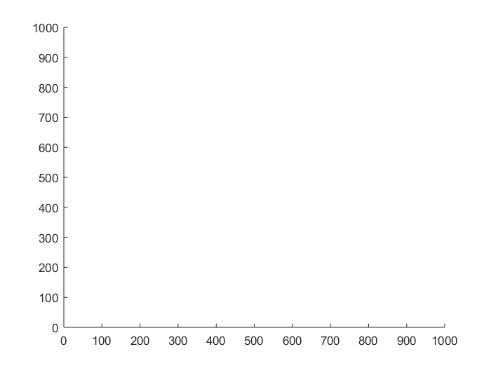
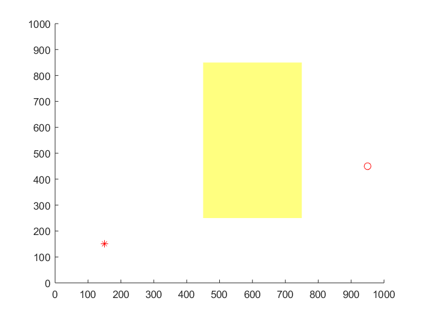
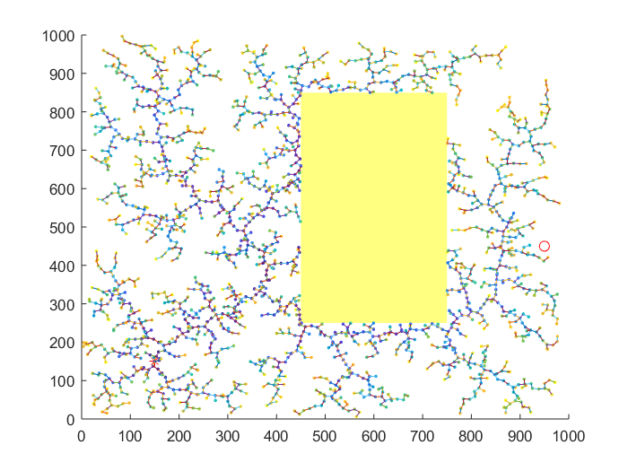

%clear; %clc; close(findobj('type','figure','name','RRT basic')); close(findobj('type','figure','name','RRT growing'));
define boundry and area.
height = 1000; width = 1000; figure('name', 'RRT star'); axis ([0 width 0 height]);
define starting and end point and iteration
qstart = [150,150]; qgoal = [950,450]; iterations = 2000; %define OBSTACLE %OBSTACLE 1 obs1.x=[450 750]; obs1.y=[250 850]; %OBSTACLE 2 %obs2.x=[]; %obs2.y=[]; obs2.x = [0 0]; obs2.y = [0 0]; %create obstacle1 x1box=obs1.x([1 1 2 2 1]); y1box=obs1.y([1 2 2 1 1]); %create obstacle2 x2box=obs2.x([1 1 2 2 1]); y2box=obs2.y([1 2 2 1 1]); % define tree edge, node and vertice % % vertecies: An array of Vertrcies' coordinates, sorted by the generated % order vertecies = qstart; vert_count = 1; eps=13; val = 0; % % % Edges:starting and ending of each edges, note edges(i) corresponds to vertecies(i+1), % because vertecies(1) is the original point edges.x = zeros(iterations,2); edges.y = zeros(iterations,2); edge_count = 0;
ind_nearest: index to the nearest point. vertecies(ind_nearest(i)) is the closetest vertex to vertecies(i+1)
ind_nearest = zeros(iterations,1); qnear = [0 0]; colli = 0; i=1; randcount=1;
define figure and hold
hold on; mapshow(x1box,y1box,'DisplayType','polygon','LineStyle','none'); mapshow(x2box,y2box,'DisplayType','polygon','LineStyle','none'); scatter(qstart(1), qstart(2), 45, '*','r','LineWidth',1); hold on; scatter(qgoal(1), qgoal(2), 45, 'o','r','LineWidth',1); hold on; %figure('name', 'RRT growing'); tic;
while i <= iterations x_rand = width*rand(); % random point generation y_rand = height*rand(); temp.rand= [x_rand,y_rand]; %save temporary random point randcount=randcount+1; % find nearest point using KD-Tree method [ind_nearest(i),val] = knnsearch(vertecies, [x_rand,y_rand]); temp.nearest = [vertecies(ind_nearest(i),1),vertecies(ind_nearest(i),2)]; %find new point using steer funcrtion or BVP qnear = steerfn(temp.rand(1),temp.rand(2),temp.nearest(1),temp.nearest(2),val,eps); %this is tem new point %check collision colli = collision(x1box,y1box,x2box,y2box,qnear,temp); if colli == 1 continue end % end %vertecies(vert_count+1,:) = [x_rand, y_rand]; vertecies(vert_count+1,:) = qnear; vert_count = vert_count + 1; edges.x(edge_count+1,:) = [vertecies(ind_nearest(i),1), qnear(1)]; edges.y(edge_count+1,:) = [vertecies(ind_nearest(i),2), qnear(2)]; edge_count = edge_count + 1; %rewire to find path %scatter(vertecies(i,1), vertecies(i,2), 5,linspace(1,10,length(vertecies(i,1))),'filled'); hold on; %plot(edges.x', edges.y'); i=i+1; end disp(randcount) toc; clear i x_rand y_rand edge_rand %mapshow(x1box,y1box,'DisplayType','polygon','LineStyle','none'); %mapshow(x2box,y2box,'DisplayType','polygon','LineStyle','none') %scatter(qstart(1), qstart(2), 45, 'o','r','LineWidth',1); hold on; %scatter(qgoal(1), qgoal(2), 45, 'o','r','LineWidth',1); hold on; scatter(vertecies(:,1), vertecies(:,2), 5,linspace(1,10,length(vertecies(:,1))),'filled'); hold on; plot(edges.x', edges.y');
2445 Elapsed time is 5.564359 seconds.